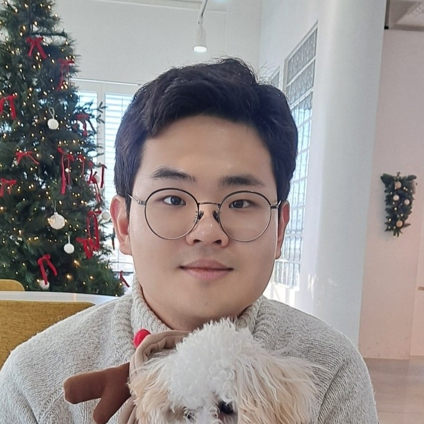

Won-Seok Choi


My current research goal is to design a cognitive agent that can understand the dynamic environment through active interactions. To achieve this, an agent should deal with critical problems such as lack of additional information, data imbalance, distribution shifts, and physical embodiment limitations. Specifically, my research topics and interests belong to:
New [08.2026] Ph.D. expected
New [03.2026 ~ 09.2026] Research Scientist Internship, LG AI Research
[09.2019 ~ Current] Ph.D. Candidate at Seoul National University (Prof. Byoung-Tak Zhang)
[03.2015 ~ 08.2019] Bachelor's degree in CSE at Seoul National University
[03.2013 ~ 02.2015] Graduated Chungnam Science High School
Reviewer — AAAI (2026, Upcoming 2027), NeurIPS (2026)
Workshop Reviewer — NeurIPS SSLTheoryPractice (2024)
[2021-S ~ 2025-F] 인공지능 만들기, K-MOOC online lecture, Teaching Assistant
[2020 ~ 2022] Samsung NPEX Course, Teaching Assistant
[2020-F, 2022-F] Artificial Neural Networks, dept.CSE, SNU, Teaching Assistant
[2019-F] Machine Learning, dept.CSE, SNU, Teaching Assistant
I have a paper accepted to the Neurocomputing journal (to appear, 1st author).
I have a paper accepted to the KDD 2026 Workshop on Evaluation and Trustworthiness of Agentic AI (to appear, co-1st author).
From Sparse to Dense: Toddler-Inspired Reward Transition in Goal-Oriented Reinforcement Learning
Junseok Park, Hyeonseo Yang, Min Whoo Lee, Won-Seok Choi, Minsu Lee, Byoung-Tak Zhang
IEEE Transactions on Cognitive and Developmental Systems, Vol. 18, No. 3, June 2026
[paper]
DUEL: Duplicate Elimination on Active Memory for Self-Supervised Class-Imbalanced Learning
Won-Seok Choi, Hyundo Lee, Dong-Sig Han, Junseok Park, Heeyeon Koo, Byoung-Tak Zhang The 38th Annual AAAI Conference on Artificial Intelligence (AAAI 2024) [paper]
Unveiling the Significance of Toddler-Inspired Reward Transition in Goal-Oriented Reinforcement Learning
Junseok Park, Yoonsung Kim, Hee bin Yoo, Min Whoo Lee, Kibeom Kim, Won-Seok Choi, Minsu Lee, Byoung-Tak Zhang The 38th Annual AAAI Conference on Artificial Intelligence (AAAI 2024) [paper]
Learning Geometry-aware Representations by Sketching
Hyundo Lee, Inwoo Hwang, Hyunsung Go, Won-Seok Choi, Kibeom Kim, Byoung-Tak Zhang The IEEE/CVF Conference on Computer Vision and Pattern Recognition 2023 (CVPR 2023) [paper]
Message passing adaptive resonance theory for online active semi-supervised learning
Taehyeong Kim, Injune Hwang, Hyundo Lee, Hyunseo Kim, Won-Seok Choi, Joseph J Lim, Byoung-Tak Zhang International Conference on Machine Learning 2021 (ICML 2021) [paper]
Label propagation adaptive resonance theory for semi-supervised continuous learning
Taehyeong Kim, Injune Hwang, Gi-Cheon Kang, Won-Seok Choi, Hyunseo Kim, Byoung-Tak Zhang 45th International Conference on Acoustics, Speech, and Signal Processing (ICASSP 2020) [paper]